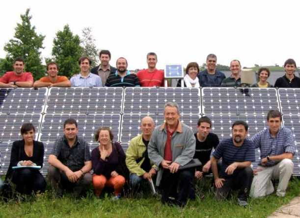

Welkom op het PICO platform. PICO geeft relevante informatie over energie, CO2, kosten en opbrengsten. Zo kunnen betrokkenen bij duurzame energieprojecten samen een strategie vormen voor een duurzaam project dat werkt.
PICO geeft toegang tot meer dan 100 kaartlagen, en biedt rekenfunctionaliteit om de gegevens onder de kaartlagen te selecteren en aggregeren.
Zo geeft PICO overzicht en inzicht in de kansen om de energievoorziening van een specifiek gebied te verduurzamen. Bekijk bijvoorbeeld de zonpotentie en besparings-mogelijkheden op pandniveau, verbruiksgegevens op postcodeniveau, enzovoorts. Ga naar de kaart om te kijken welke kansen voor verduurzaming in uw buurt aanwezig zijn.
Voordat u de kaart kunt gebruiken vragen wij u om u te registreren. Om ons product te verbeteren willen we graag weten wie u bent en waarvoor u PICO gebruikt. Dat is geheel vrijblijvend en uw gegevens worden voor niets anders gebruikt dan voor het verbeteren van onze serviceverlening.
PICO gaat uit van een buurtaanpak: om duurzaamheids-doelstellingen effectief te behalen is strategie nodig op schaal groter dan de individuele woning. Dat levert schaalvoordelen op. Het maakt de weg vrij voor duurzame oplossingen die niet geschikt zijn voor een enkele woning, maar die op een grotere schaal wel mogelijk zijn.
Op dit platform kunt u niet alleen een schat aan gegevens bekijken, maar ook analyses uitvoeren met modellen van o.a. TNO, en de resultaten combineren. Deze worden op interactieve kaarten getoond, en kunnen door middel van geografische selecties en aggregaties ook in tabellen en grafieken worden weergegeven.
Dit platform biedt een prima basis voor het uitvoeren van een gebiedsverkenning, een kosten baten analyse of een milieu-effectrapportage. PICO ontsluit relevante informatie voor bijvoorbeeld:
De data en informatie van het PICO platform bestrijken heel Nederland. PICO maakt gebruik van een veelvoud aan databronnen zoals basisregistraties, sociaal-economische data, energieverbruiksdata en diverse energiemodellen. Gegevens over de leeftijd en herkomst van de data (de metadata) kunnen altijd worden bekeken zodat duidelijk is waar de gegevens vandaan komen en hoe actueel deze nog zijn.
Aan dit platform worden continu nieuwe toepassingen toegevoegd met nieuwe gegevens, nieuwe modellen en nieuwe functionaliteiten. Dit platform zal in de toekomst aansluiten bij de Nederlandse Energie Atlas, die door de overheid wordt ontwikkeld (de lancering wordt in oktober verwacht). Met het webportal PICO hoopt het PICO consortium bij te dragen aan de energietransitie in Nederland.
PICO is ontwikkeld door een samenwerkingsverband van Geodan, TNO, Alliander, Ecofys, NRG031, en Esri Nederland.